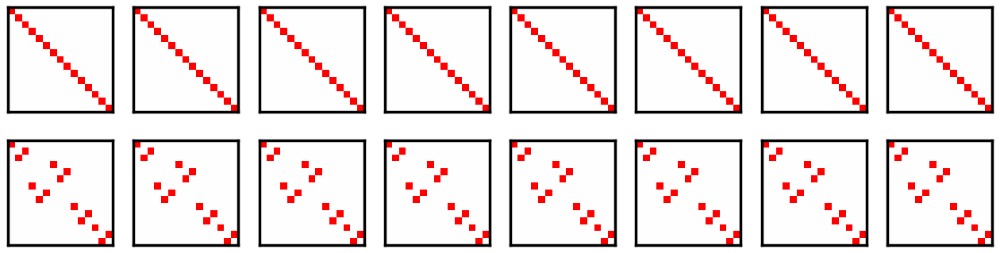
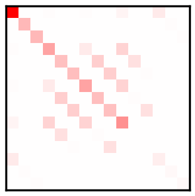
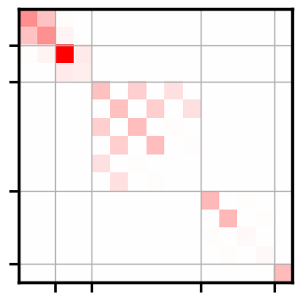

Application of space-group irreps to lattice vibration¶
Download this notebook. Outputs below are saved in the notebook.
This example shows how to prepare representation matrix of atomic displacements by space group, and block-diagonalize dynamical matrix for harmonic lattice vibration only from symmetry.
Import modules¶
from pathlib import Path
import phonopy
import numpy as np
import matplotlib.pyplot as plt
import seaborn as sns
import spgrep
from spgrep import get_spacegroup_irreps
from spgrep.representation import check_spacegroup_representation, project_to_irrep
print(f"spgrep=={spgrep.__version__}")
spgrep==0.3.4.dev177+gd763494
Prepare space-group operations and representation¶
We consider lattice vibration of Perovskite structure (\(Pm\overline{3}m\)) at X point.
# Perovskite structure: Pm-3m (No. 221)
a = 3.986
lattice = np.array(
[
[a, 0, 0],
[0, a, 0],
[0, 0, a],
]
)
positions = np.array(
[
[0, 0.5, 0.5], # O(3c)
[0.5, 0, 0.5], # O(3c)
[0.5, 0.5, 0], # O(3c)
[0.5, 0.5, 0.5], # Ti(1b)
[0, 0, 0], # Ba(1a)
]
)
numbers = [0, 0, 0, 1, 2]
qpoint = [0.5, 0, 0] # X point (with primitive cell)
Irreps of the space group is obtained by spgrep.get_spacegroup_irreps:
irreps, rotations, translations, mapping_little_group = get_spacegroup_irreps(
lattice, positions, numbers, qpoint
)
# Sanity check if `irreps` are representation for space group
little_rotations = rotations[mapping_little_group]
little_translations = translations[mapping_little_group]
for irrep in irreps:
assert check_spacegroup_representation(little_rotations, little_translations, qpoint, irrep)
Let \(u_{\mu}(l \kappa)\) be a \(\mu\)-direction atomic displacement of the \(\kappa\)-th atom in the \(l\)-th unit cell. We consider the fourier transformation of \(u_{\mu}(l \kappa)\),
where \(N\) is number of lattice points in a supercell, and \(M_{\kappa}\) is mass of the \(\kappa\)-th atom. Let \(\mathbf{r}(l\kappa)\) be equilibrium position of the \(\kappa\)-th atom in the \(l\)-th unit cell. The fourier transformation of \(u_{\mu}(l \kappa)\) forms representation of space group \(\mathcal{G}\) 1 as
where \(\mathbf{R}_{g}\) represents rotation part of \(g\), and
def get_displacements_representation(
lattice,
positions,
little_rotations,
little_translations,
qpoint,
):
r"""Compute representation matrix for fourier-transformed displacements.
.. math::
\\Gamma_{\\kappa'\\mu'; \\kappa\\mu}^{\\mathbf{q}}(g) := \\exp \\left( -i \\mathbf{R}_{g} \\mathbf{q} \\cdot \\mathbf{h}_{g}(\\kappa) \\right) [\\mathbf{R}_{g}]_{\\mu'\\mu} \\delta_{ g\\kappa, \\kappa' }
"""
little_order = len(little_rotations)
num_atoms = len(positions)
# Operation-`i` moves atom-`kappa` to `permutations[i, kappa]`
permutations = np.zeros((little_order, num_atoms), dtype=int)
for i, (Ri, vi) in enumerate(zip(little_rotations, little_translations)):
for kappa, position in enumerate(positions):
new_pos = np.remainder(Ri @ position + vi, 1)
for kappa2, position2 in enumerate(positions):
if np.allclose(position2, new_pos):
permutations[i, kappa] = kappa2
break
shifts = np.zeros((little_order, num_atoms, 3))
for i, (Ri, vi) in enumerate(zip(little_rotations, little_translations)):
perm_i = permutations[i]
shifts[i] = positions @ Ri.T + vi[None, :] - positions[perm_i]
perm_rep = np.zeros((little_order, num_atoms, num_atoms), dtype=np.complex128)
for i, Ri in enumerate(little_rotations):
for kappa in range(num_atoms):
kappa2 = permutations[i, kappa]
perm_rep[i, kappa2, kappa] = np.exp(
-2j * np.pi * np.dot(Ri.T @ qpoint, shifts[i, kappa])
)
# Rotation matrix in cartesian (order, 3, 3)
A = np.transpose(lattice) # column-wise lattice vectors
Ainv = np.linalg.inv(A)
rotation_rep = np.array([A @ r @ Ainv for r in little_rotations], dtype=np.complex128)
rep = np.einsum("ipq,iab->ipaqb", perm_rep, rotation_rep, optimize="greedy")
return rep.reshape(-1, num_atoms * 3, num_atoms * 3)
rep = get_displacements_representation(
lattice, positions, little_rotations, little_translations, qpoint
)
The order of the little co-group at X point is 16, and the atomic displacements are represented by 15 components (x,y,z directions for 5 atoms).
Thus, shape of rep is (16, 15, 15).
(16, 15, 15)
nrows = 2
ncols = 8
fig, axes = plt.subplots(nrows, ncols, figsize=(2 * ncols, 2 * nrows))
for row in range(nrows):
for col in range(ncols):
idx = row * ncols + col
ax = axes[row][col]
ax.imshow(np.abs(rep[idx]), cmap="bwr", vmin=-1, vmax=1)
ax.set_aspect("equal")
ax.set_xticks([])
ax.set_yticks([])

Load dynamical matrix from PhononDB¶
Next, we consider to construct a projection operator, and block-diagonalize dynamical matrix at X point. We use a phonon calculation of Perovskite-BaTiO3 in PhononDB.
# http://phonondb.mtl.kyoto-u.ac.jp/xz-files/phonopy_mp-2998.yaml.xz
path = Path().resolve().parent.parent / "examples" / "phonopy_mp-2998.yaml.xz"
ph = phonopy.load(path)
ph.dynamical_matrix.run(qpoint)
dynamical_matrix = ph.dynamical_matrix.dynamical_matrix
fig, ax = plt.subplots(figsize=(2 * ncols, 2 * nrows))
ax.imshow(np.abs(dynamical_matrix), cmap="bwr", vmin=-1.5, vmax=1.5)
ax.set_xticks([])
ax.set_yticks([])
plt.show()

Apply projection operator and block-diagonalize dynamical matrix¶
all_basis = []
for irrep in irreps:
list_basis = project_to_irrep(rep, irrep)
print(f"{len(list_basis)} basis vectors for irrep with {irrep.shape}")
all_basis.extend(list_basis)
blocked_dynamical_matrix = (
np.concatenate(all_basis) @ dynamical_matrix @ np.conj(np.concatenate(all_basis)).T
)
fig, ax = plt.subplots(figsize=(2 * ncols, 2 * nrows))
ax.imshow(np.abs(blocked_dynamical_matrix), cmap="bwr", vmin=-1.5, vmax=1.5)
ax.set_xticks([])
ax.set_yticks([])
ax.set_xticks([1.5, 3.5, 9.5, 13.5], minor=True)
ax.set_yticks([1.5, 3.5, 9.5, 13.5], minor=True)
ax.grid(which="minor", linewidth=1)
plt.show()
2 basis vectors for irrep with (16, 1, 1)
0 basis vectors for irrep with (16, 1, 1)
0 basis vectors for irrep with (16, 1, 1)
2 basis vectors for irrep with (16, 1, 1)
3 basis vectors for irrep with (16, 2, 2)
2 basis vectors for irrep with (16, 2, 2)
1 basis vectors for irrep with (16, 1, 1)
0 basis vectors for irrep with (16, 1, 1)
0 basis vectors for irrep with (16, 1, 1)
0 basis vectors for irrep with (16, 1, 1)

-
A. A. Maradudin and S. H. Vosko, Rev. Mod. Phys. 40, 1–37 (1968). ↩